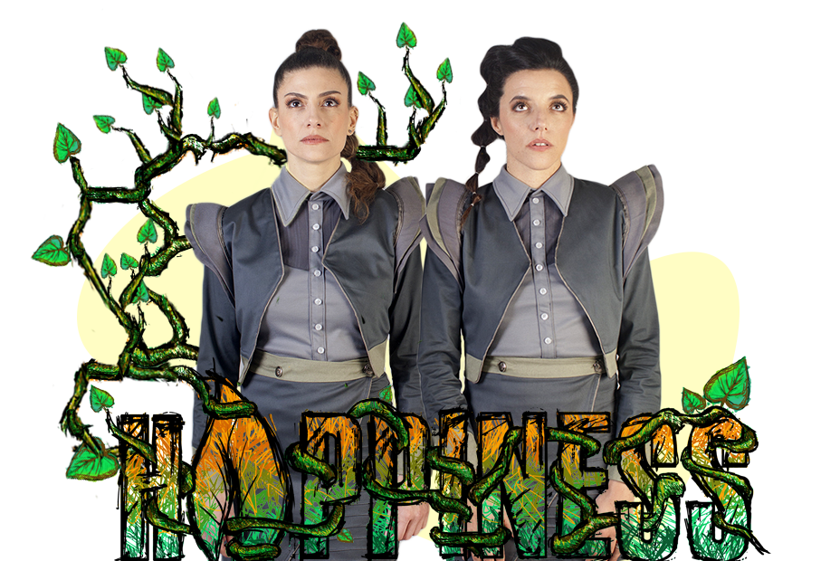
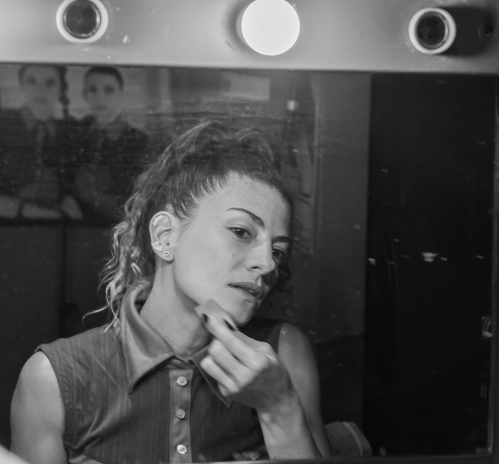
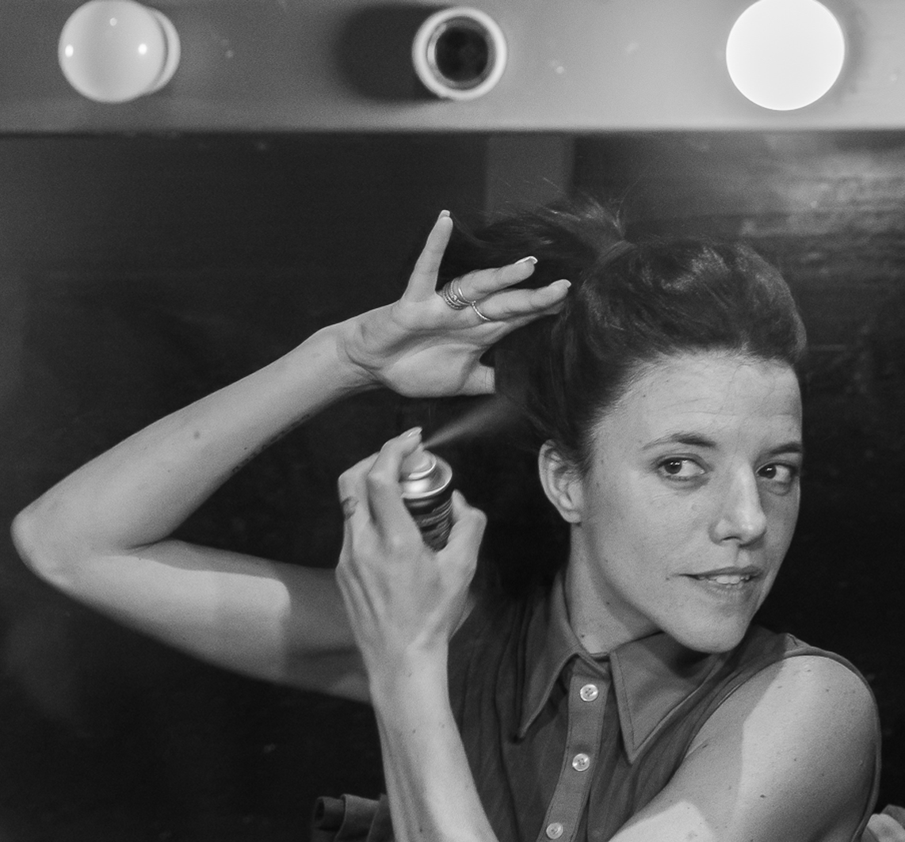

Es dramaturga, actriz y cantante, egresada de la Escuela de Teatro de San Miguel. Co- Autora de la obra "Happiness" Se perfeccionó con maestros tales como: Lito Cruz, Carlos Gianni, Gabriela Izcovich, Manuel Iedvabni, Cristobal Jodorosky y Lili Popovich. En canto, se formó con: Melisa Chao, Silvina Snajder, Nacho Medina y Willy Lorenzo. En dramaturgia: con Mariano Tenconi Blanco e Ignacio Bartolone. Desde el año 1998 y hasta la actualidad, trabaja de forma ininterrumpida en diversos espectáculos de teatro, performances y musicales. Entre lo mas destacados, “Gordofobia, a rodar mi vida”, “107 a destino”, “Trece mujeres no es mala suerte”.

Es Actriz, Dramaturga y Comunicadora Social (UBA). En el terreno de la actuación, se formó con maestros tales como: Agustín Alezzo, Omar Aita y Jorge Eines, perfeccionadose, a la vez, en teatro físico y antropológico en el C.C. Ricardo Rojas. En comedia musical, se formó con Zek Caride, y en actuación para formato audiovisual, con Claudio Ferrari. Estudió canto con Nacho Medina. En dramaturgia se formó con: Mauricio Kartún, Ignacio Apolo, Mariano Tenconi Blanco e Ignacio Bartolone.Entre los espectaculos en donde actuo se destacan, “Macbeth, yo no me voy a morir”, “Dile a la luna que venga”, “Melenita de León”
.jpeg)
.jpeg)
.jpeg)
.jpeg)
.jpeg)
- ¡Escribinos y te contestamos a la brevedad!
- Tel +54 11 348702562
- Mail paulazaurdo@gmail.com
- Encontranos en @happinesslaobra